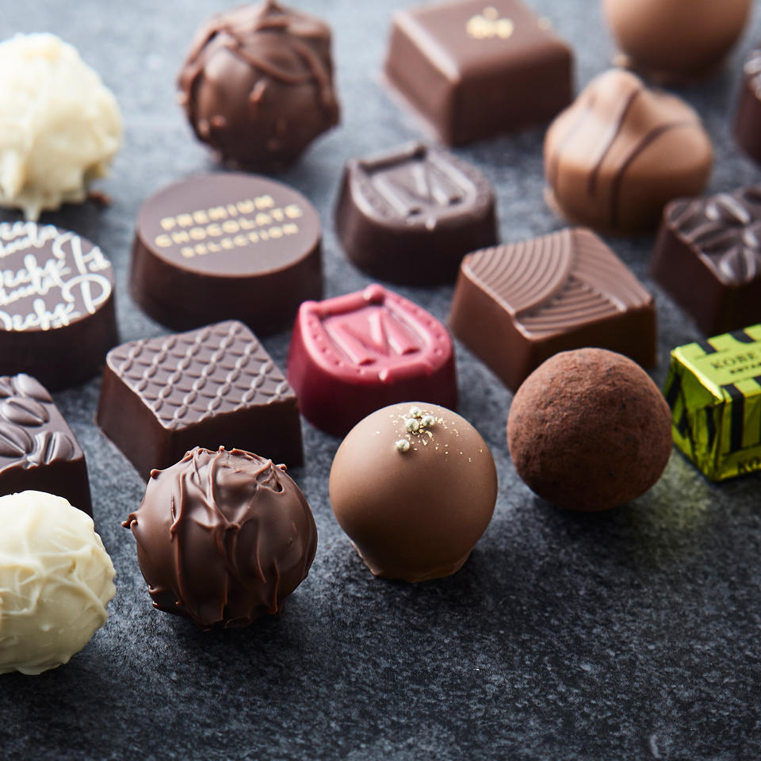

YOU
CPU
| Start | 2 | 3 | 4 | 5 | 6 | 7 | 8 | 9 | 10 2マス戻る |
| 20 | 19 スタートへ |
18 | 17 | 16 | 15 2マス進む |
14 | 13 | 12 | 11 |
| 21 | 22 | 23 | 24 | 25 | 26 8マス進む |
27 | 28 | 29 | 30 |
| 40 | 39 | 38 | 37 | 36 | 35 | 34 | 33 | 32 5マス戻る |
31 |
| 41 | 42 | 43 | 44 | 45 | 46 | 47 | 48 | 49 1マス進む |
Goal |